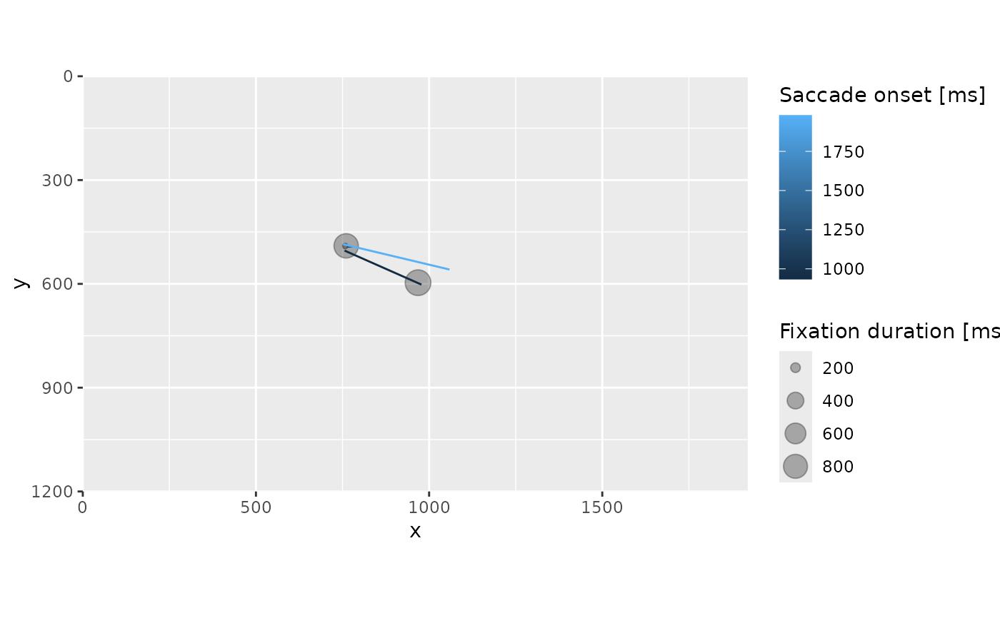
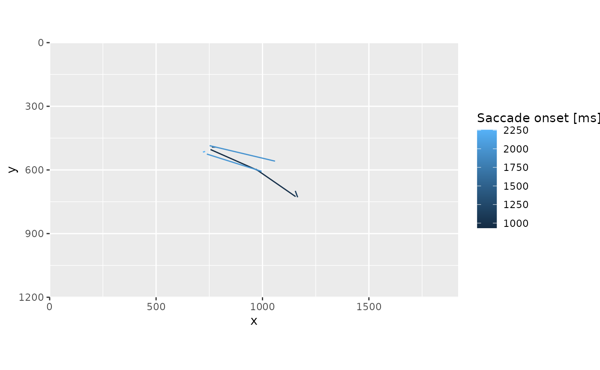
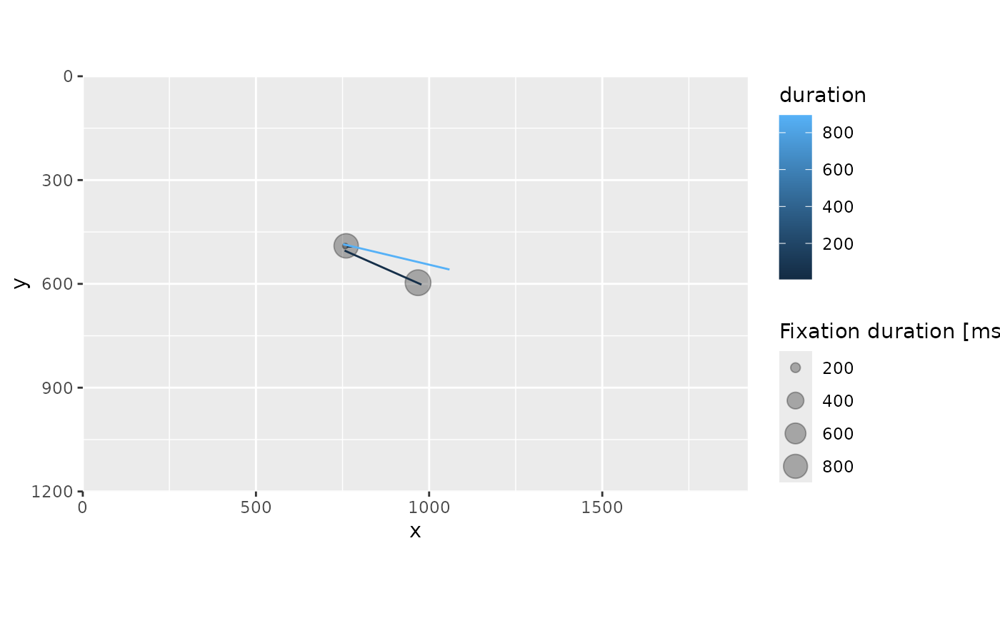

This is only a basic plotting utility intended primarily for a quick visual check. Please refer to companion vignette on plotting for details about geoms and implementing your own custom plotting routine.
Usage
# S3 method for class 'eyelinkRecording'
plot(
x,
trial = 1,
show_fixations = TRUE,
fixation_size_property = "duration",
size_legend = ifelse(fixation_size_property == "duration", "Fixation duration [ms]",
NA),
show_saccades = TRUE,
saccade_color_property = "sttime_rel",
color_legend = ifelse(saccade_color_property == "sttime_rel", "Saccade onset [ms]", NA),
background_grobs = NULL,
...
)Arguments
- x
eyelinkRecordingobject- trial
Trials to be plotted, could be a scalar index, a vector of indexes, or
NULL(all trials). Defaults to1.- show_fixations
logical, whether to draw fixation as circles. Defaults to
TRUE.- fixation_size_property
Which fixation property is used as circle aesthetics. Defaults to
"duration".- size_legend
An optional legend title, defaults to
"Fixation duration [ms]"iffixation_size_propertyis"duration"and toNAotherwise. In the latter case, the legend title is unmodified (i.e., determined by ggplot).- show_saccades
logical, whether to draw saccades as line segments. Defaults to
TRUE.- saccade_color_property
Which saccade property is used as color aesthetics. Defaults to
"sttime_rel"(onset time relative to the trial start).- color_legend
An optional legend title, defaults to
"Saccade onset [ms]"ifsaccade_color_propertyis"sttime_rel"and toNAotherwise. In the latter case, the legend title is unmodified (i.e., determined by ggplot).- background_grobs
ggplot2 graphic objects add to the plot before plotting data.
- ...
Addition parameters (unused)
Examples
data(gaze)
# fixations and saccades for the first trial
plot(gaze)

# fixations for the all trials
plot(gaze, trial = NULL, show_saccades = FALSE)
# saccades for the first two trials
plot(gaze, trial = 1:2, show_fixations = FALSE)

# color codes duration of a saccade
plot(gaze, saccade_color_property = "duration")
